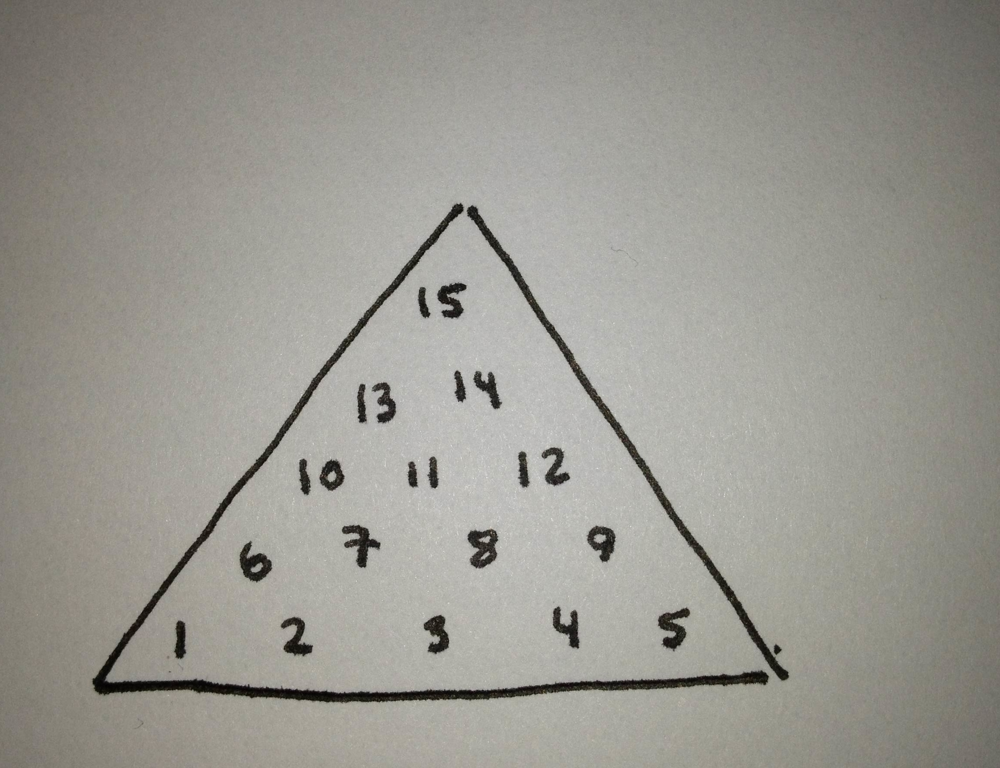

A brute force ruby solver:
I found this puzzle around the office and after earning idiot status a few times playing it I decided I would beat it the only way I could: with a computer. The objective of the game is to hop the pegs over each other, checkers style, until there is only 1 remaining. Its harder than you think.
I went with a brute force method for solving this. Using recusion I try every possible combination of moves until one works. Here is a code snipped from the "play" method:
def play
puts "num holes occupied this recursion:" + count_occupied_holes
return true if count_occupied_holes.to_i < 2
@holes.each_with_index {|hole, index|
if hole.occupied
6.times do |i|
ad_hole = self.holeInDirection(hole.pos[0],hole.pos[1],i)
next if ad_hole == nil || !ad_hole.occupied
over_hole = self.holeInDirection(ad_hole.pos[0],ad_hole.pos[1],i)
if (over_hole != nil && !over_hole.occupied)
make_move hole, i
puts "RECURSE"
return true if play
take_back_move over_hole, opp(i)
end
end
end
}
return false
end
Here is some sample output:
9, 14
0, 9
7, 5
5, 12
13, 6
1, 10
3, 1
8, 13
12, 7
14, 11
11, 2
1, 3
4, 2
The holes follows this mapping:
Source!